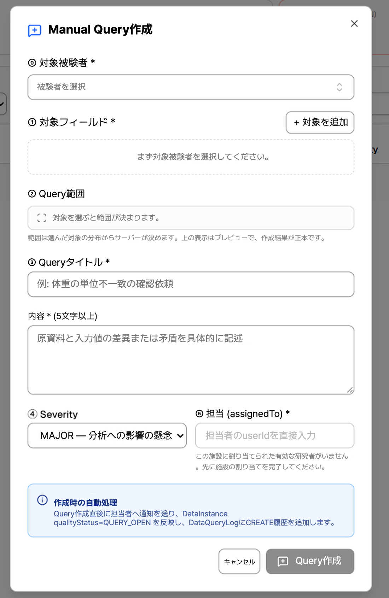
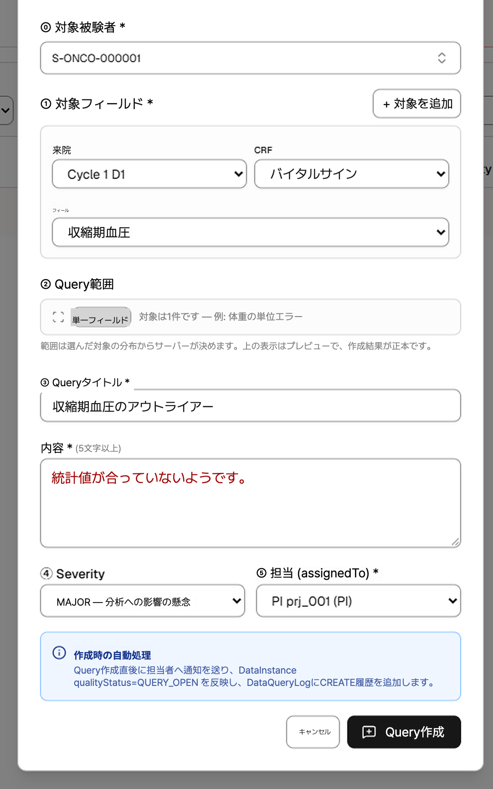
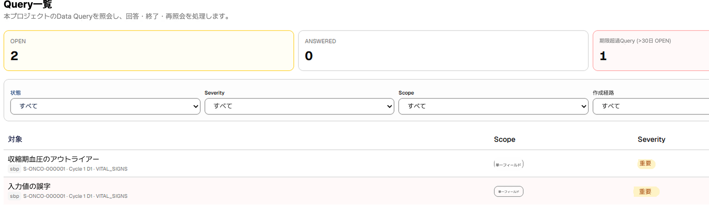
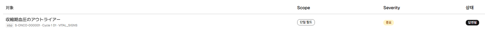
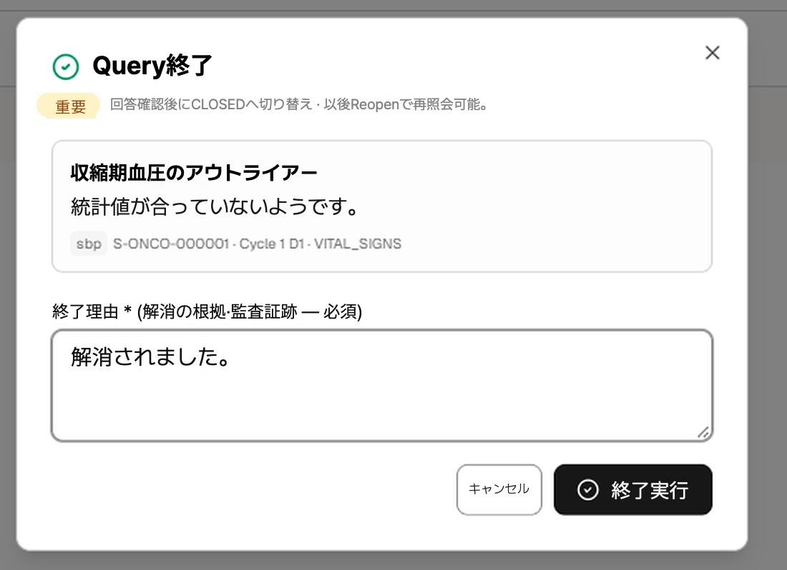
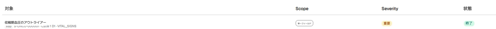
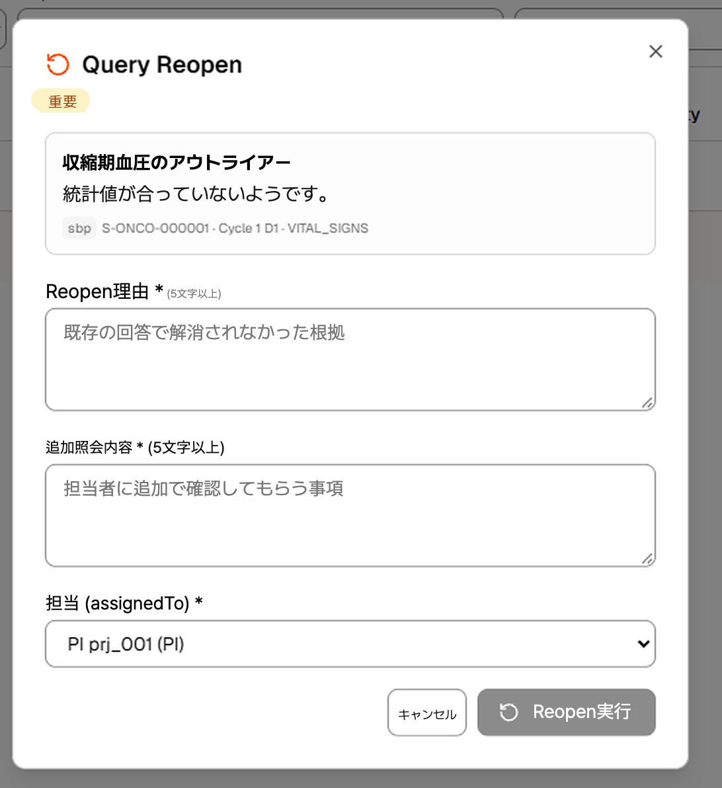

Query
SCR-QA-003·004·005·006·007 · 一覧 · 作成 · 回答 · 終了 · 再照会
Query一覧
- 1.1画面構成
- 1.2行アクションメニュー
1.1画面構成
概要
入力されたデータに対する確認依頼(Query)を一か所で処理する画面です。上から集計カード · フィルター · 一覧の順に並んでおり、一覧の各行がQuery1件です。回答 · 終了 · 再照会はすべてこの画面から始まり、処理は行の右端にあるアクションメニューから行います 1.2。
画面説明

状態フィルター — 未処理 · 回答済み · 終了などで絞り込みます。
Severityフィルター — 軽微 · 重要 · 致命で絞り込みます。
Scopeフィルター — 範囲で絞り込みます。
作成経路フィルター — 自動（規則）と手動で絞り込みます。自動は検証規則が作成したQueryです。
タイトル下の案内 — 「本プロジェクトのData Queryを照会し、回答・終了・再照会を処理します。」
OPEN — まだ回答されていない件数です。
ANSWERED — 回答は届いたものの、まだ終了していない件数です。
遅延 Query (>30日 OPEN) — 作成されてから30日を超えても回答がない件数です。回答済みの件は、どれだけ古くてもここには含まれません。
対象列 — Queryのタイトルです。タイトルを選択するとQuery詳細に移動し、処理履歴と対象ごとの解消状況を確認できます。
Scope列 — 単一フィールド · 交差フィールド · 交差CRF · 交差Visitの4種です。
Severity列 — 軽微 · 重要 · 致命の3種です。
タイトルの下の小さな文字はフィールド · 被験者 · 来院 · CRFです — どのデータに掛かったQueryかを、ここで確認します。
Query状態 6種
| 状態 | 意味 | 次にすること |
|---|---|---|
| 未処理 | 回答を待っている状態 | 担当者が回答 |
| 回答済み | 回答が登録された状態 | データ管理者が終了 |
| 一部回答 | 複数の対象のうち一部だけ解消された状態 | 残りの対象を続けて処理 |
| 終了 | 解消が確認された状態 | なし — 必要なら再照会 |
| 再照会 | 終了後にもう一度照会した状態 | 新しく生じたQueryに回答 |
| 取消 | 破棄されたQuery | なし — この画面に取消機能はありません |
注意事項
誤解しやすい動作
- • 監査者はこの画面を閲覧のみ可能です。処理権限（作成 · 回答 · 終了 · 再照会）を一つも持たないユーザーには、すべてのアクションが無効で表示されます。プロジェクトが終了・保管の状態にある場合も同様です。
1.2行アクションメニュー
概要
1.1と同じ画面の右側の領域です。Query処理は行ごとに行い、行の右端にある ⋯ を選択するとメニューが開きます。その行の状態と自分の権限によって項目が変わります — キャプチャは回答済みの行のため回答と終了が一緒に表示され、再照会は表示されません。再照会は終了の行でのみ開けます。
画面説明

新規Query — 人が直接Queryを作成します 2.1。研究責任者 · 臨床開発モニター · データ管理者にのみ表示されます。
検索 — メッセージ · フィールド · 担当で絞り込みます。
フィルター初期化 — 設定した条件を一度にすべて解除します。
⋯ — その行のアクションメニューを開きます。実行できる操作が一つもない場合は、⋯ 自体が表示されません。
データ入力画面 — そのQueryが指すCRF入力画面に移動します 3.2。閲覧のための移動のため、権限に関係なく表示され、監査者も利用できます。
回答 — 回答ウィンドウを開きます 3.1。未処理 · 回答済み · 再照会の状態で開きます。
終了 — 終了ウィンドウを開きます 4.1。回答済みの状態で、データ管理者にのみ開きます。
遅延 Query (>30日 OPEN)カード — 1.1 で説明した集計の残りです。
表示中 — フィルターを適用した後、今の画面に表示されている件数です。前の3枚のカードとは基準が異なります。
作成経路フィルター — 自動（規則） · 手動で絞り込みます。
状態列 — メニューに何が表示されるかは、この値で決まります。
担当列 — 回答できるのは担当者または登録者だけです。
経過(日)列 — 作成された日からの経過日数です。30日を超えた未処理の件は行全体が赤く表示されます。
1行目は回答済みなので、回答と終了が一緒に開いています。
2行目は未処理なので、同じメニューを開くと終了が抜けて回答だけ表示されます。
注意事項
誤解しやすい動作
- • 「データ入力画面」の項目が表示されないQueryもあります。そのQueryに被験者 · 来院 · CRFの位置が記録されていないと移動先がわからないため、項目が描画されません — 故障ではありません。この場合は対象列の識別子を見て、該当するCRFを直接探してください。
Query作成
- 2.1初めて開いたとき
- 2.2対象の指定と作成
- 2.3作成結果
2.1初めて開いたとき
概要
Queryを手動で作成する画面です。入力の順序が番号で表示されており、⓪被験者を先に選ばないと残りの項目は開きません — 以後の来院 · CRF · フィールドの一覧が、すべてその被験者から導かれるためです。この構造のおかげで、異なる被験者を混ぜて指定する経路がそもそもありません。
画面説明

⓪ 対象被験者 — 必須です。最初に選びます。
対象追加 — 確認してもらうフィールドを追加します。複数件を指定できます 2.2。
③ Queryタイトル — 必須です。一覧の対象列にそのまま表示されます。
内容 — 必須で、5文字以上です。原資料と入力値の差異または矛盾を具体的に記述します。
④ Severity — 重要度です。初期値は重要で、軽微・致命に変更できます。
⑤ 担当 — 必須です。このQueryに回答する人を指定します。
閉じる — 作成せずにウィンドウを閉じます。
対象領域の案内 — 「まず対象被験者を選択してください。」被験者を選ぶまで、この欄には何も追加できません。
② Query範囲 — 空欄です。「対象を選ぶと範囲が決まります。」
範囲の案内 — 「範囲は選んだ対象の分布に基づいてサーバーが決定します。上の表示はプレビューであり、作成結果が正式なものです。」直接選ぶ項目ではありません。
担当欄が直接入力になっており、「この機関に割り当てられた有効な研究者がいません。先に機関割り当てを完了してください。」と案内されます — 選ぶ候補がないときの代わりの入力方法であり、故障ではありません。
作成時の自動処理の案内 — 作成すると担当者に通知が届き、そのCRFの品質ステータスがQueryオープンに変わり、処理履歴に作成記録が残ります。
キャンセル · Query作成 — 必須項目をすべて入力するまで、作成は薄く表示されて選択できません 2.2。
注意事項
誤解しやすい動作
- • 担当者の候補がない場合は、先に機関割り当てを終えてください。担当は必須ですが、その機関に割り当てられた有効な研究者がいなければ選ぶ対象がありません。参加機関画面で研究者の割り当てを先に済ませてから戻るのが正しい手順です。
2.2対象の指定と作成
概要
被験者を選ぶと対象領域が開き、来院 → CRF → フィールドの順に絞り込んでいきます。3つすべてを選ぶと② Query範囲が自動で入ります — 直接選ぶ項目ではなく、指定した対象が何件にまたがるかをシステムが判断した結果です。
画面説明

来院 — その被験者に展開された来院の中から選びます。
CRF — その来院に結合されたCRFの中から選びます。
フィールド — そのCRFの項目の中から、確認してもらう項目を選びます。
② Query範囲が単一フィールドに確定し、「対象が1件です」が併せて表示されます。対象をさらに追加すると交差範囲に変わります。
Query作成 — 作成します。必須項目（被験者 · 対象 · タイトル · 内容 · 担当）がすべて入力されていないと選択できません。
選んだ被験者はScreening Noで確定して表示されます。ここを変更すると下の対象が初期化されるため、先に確定してください。
③ Queryタイトル — 一覧でこのQueryを探すための名前なので、何を尋ねているかがわかるように書きます。
内容 — 担当者が原資料を確認できるように、根拠を記入します。
④ Severity — 一覧のSeverity列とフィルターにそのまま使われます。
⑤ 担当 — 割り当てられた研究者がいる場合は一覧から選ぶ方式に変わります 2.1。役割が括弧付きで併せて表示されます。
キャンセル — 入力を破棄してウィンドウを閉じます。
注意事項
誤解しやすい動作
- • Query範囲は作成してみて初めて確定します。ウィンドウに表示される範囲はプレビューで、最終的な判断はサーバーが行います。繰り返し収集するCRFでは、同じ来院 · 同じフォームでも回次が異なると交差範囲として扱われることがあるため、作成後に一覧のScope列で結果を確認してください。
2.3作成結果
概要
作成すると画面が閉じて一覧に戻ります。新しいQueryが一覧の一番上に入り、集計カードの数字も一緒に変わります。この時点で担当者にはすでに通知が届いており、そのCRFの品質ステータスもQueryオープンに変わっています。
画面説明

新しく作成したQuery — タイトルを選択するとQuery詳細に移動します。下の小さな文字がフィールド · 被験者 · 来院 · CRFです。
OPENが1つ増えました。新しいQueryは必ず未処理から始まります。
ANSWEREDはそのままです — 回答が届くまで動きません。右側の遅延Queryもそのままです（経過日数が0なので30日の基準外）。表示中だけが一緒に増えます。
新しいQueryの対象 — 指定したフィールド · 被験者 · 来院 · CRFがそのまま載ります。
Scopeは作成時にサーバーが決めた値です 2.2。
Severityはウィンドウで選んだ値のままです。
既存のQueryはそのまま残ります。経過日数が大きい件は行全体が赤く表示され、先に処理すべき対象であることを知らせます。
注意事項
誤解しやすい動作
- • 作成した人も自分のQueryに回答できます。回答できる資格は担当者または登録者だからです。ただし、そうすると質問した人と回答した人が同じになり、確認の意味がなくなるため、担当者が原資料を確認して回答するようにしてください。
回答
- 3.1Query回答
- 3.2データ入力画面での回答
3.1Query回答
概要
担当者が原資料を確認した結果を記録するウィンドウです。対象が1か所であれば、このウィンドウで値の修正と回答を一緒に処理でき、保存1回で両方が一緒に記録されます。対象が複数の箇所にまたがるQueryは、値の修正なしで回答だけを受け取り、一部回答の状態になります。
画面説明


値の修正 — 原資料と異なる場合は、ここで直接修正します。両側が許容範囲であり、範囲外の値は保存時にエラーになります。修正しなくても回答できます。
変更理由 — 値を修正した場合のみ必須で、5文字以上です。値をそのままにしておけば求められません。
回答内容 — 常に必須で、5文字以上です。原資料の確認結果と修正の有無を記述します。
回答 + 値保存 — 値と回答を一緒に保存します。値を修正していない場合は回答保存と表示されます。
一覧の状態が回答済みに変わり、集計のOPENが減ってANSWEREDが増えます。以後はデータ管理者による終了を待ちます 4.1。
状態 · Scope · Severityバッジ — どのQueryに回答しているかを確認します。
照会内容 — タイトル · 本文 · 対象です。回答の前に必ず読んでください。
現在値 — 今保存されている値です。下の入力欄の値と比べて、何が変わるかを確認します。
閉じる — 回答せずにウィンドウを閉じます。
キャンセル — 入力を破棄してウィンドウを閉じます。
注意事項
誤解しやすい動作
- • 誰でも回答できるわけではありません。回答権限のある役割であると同時に、その件の担当者または登録者である必要があります。一覧で回答の項目が表示されない場合は、自分が対象ではないということなので、担当列を確認してその人に伝えてください。
3.2データ入力画面での回答
概要
行アクションのデータ入力画面に移動すると、そのQueryがかかっている項目を含むCRFが開きます。ここでは実際の値を見ながら回答できるため、原資料との照合が必要な場合に便利です。1つの項目にQueryが複数ある場合は、カードが何枚も重なって表示されます。
画面説明

終結 — 回答が終わったQueryをその場で終了します。データ管理者またはその件の担当者の場合に表示されます。
回答コメント — 未処理Queryへの回答をここに記入します。5文字以上で、フォームの保存を押すと値と一緒に記録されます。
このコメントを変更理由としても使用 — 値を修正した場合に別途求められる変更理由を、このコメントで代えます。
画面上部の帯にあるQuery未処理 N件 · 終結待ち N件 — 前者は回答が必要な件数、後者は終了を待っている件数です。やるべきことが異なります。
回答済みカード — すでに回答が届いたQueryです。「回答が記録されました。確認後に終結してください。」と、次にすることをお知らせします。
履歴 · 詳細表示 — そのQueryの全体のやり取りと処理履歴を確認します。
未処理カード — まだ回答していないQueryです。項目の右端のQueryアイコンに、かかっている件数が併せて表示されます。
解消方法 — 選ぶ項目ではなく、値の変更有無による判定結果です。値を修正すると値の訂正、修正しなければ現行維持に自動で変わります。
注意事項
必須確認 データ破損 · フォーム完了不可
- • この画面での回答は、フォームを保存しないと記録されません。コメントだけ書いて画面を離れると何も残りません — Query一覧の回答ウィンドウが保存まで一度に完了させるのとは異なります。コメントを書いたら、必ず保存で確定してください。
終了と再照会
- 4.1Query終了
- 4.2再照会（Reopen）
4.1Query終了
概要
回答を確認した後にQueryを閉じるウィンドウです。データ管理者だけが開け、回答済みの状態でのみ開けます。終了は「終わり」ではなく、元に戻せる終結です — 後で再度確認する必要が生じたら、再照会で続けます 4.2。
画面説明


終了理由 — 必須です。何によって解消されたかを記入します。空欄のままだと保存が拒否されます。
終了実行 — Queryを閉じます。
一覧の状態が終了に変わり、ANSWEREDの集計から外れます。
ウィンドウ上部の案内 — 「回答確認後にCLOSEDへ切り替え · 以後Reopenで再照会可能」。終了が最終状態ではないことを知らせます。
照会内容と対象 — 何を閉じるのかを確認します。
ラベルが理由の性格を示しています — 「解消根拠 · 監査エビデンス — 必須」。臨床試験のデータは、なぜ閉じたのかまで残しておく必要があるためです。
キャンセル — 閉じずにウィンドウを抜けます。
閉じる — 同じ動作です。
注意事項
必須確認 データ破損 · フォーム完了不可
- • 終了理由は監査の証拠です。「確認済み」のように中身のない文言を書くと、後でそのQueryがなぜ解消されたのかを説明できなくなります。何を確認し、その結果どの根拠で閉じたのかを残してください。
4.2再照会（Reopen）
概要
終了したQueryをもう一度照会するウィンドウです。終了の状態でのみ、モニター要員とデータ管理者にだけ開けます。重要なのは、元のQueryを生き返らせるわけではないという点です — 元の件は再照会として残り、回答を受け取るための新しいQueryが1つ追加されます。
画面説明


Reopen理由 — 必須で、5文字以上です。既存の回答では解消されていない根拠を記入します。
追加照会内容 — 必須で、5文字以上です。担当者に追加で確認してもらう事項で、新しく作られるQueryの内容になります。
担当 — 新しいQueryを受け取る人です。既存の担当者が初期値で、変更できます。
Reopen実行 — 再照会を開始します。両方の理由を入力するまでは薄く表示され、選択できません。
元のQueryの状態が再照会に変わり、それとは別に未処理の新しいQueryが一覧に追加されます。新しい行には(reopen #1)のように、何回目の再照会かも併せて表示されます。
Severityは元のQueryの値を引き継ぎます。
終了した照会内容と対象 — 何を再度確認するのかを確認します。
キャンセル — 再照会せずにウィンドウを閉じます。
閉じる — 同じ動作です。
注意事項
誤解しやすい動作
- • 再照会すると、処理すべき件数が1つ増えます。今後回答が必要なのは新しく生じたQueryであり、元の件は経緯を残すために再照会の状態で保存されます。一覧で2件が見えるのは正常です。未処理の方を処理してください。